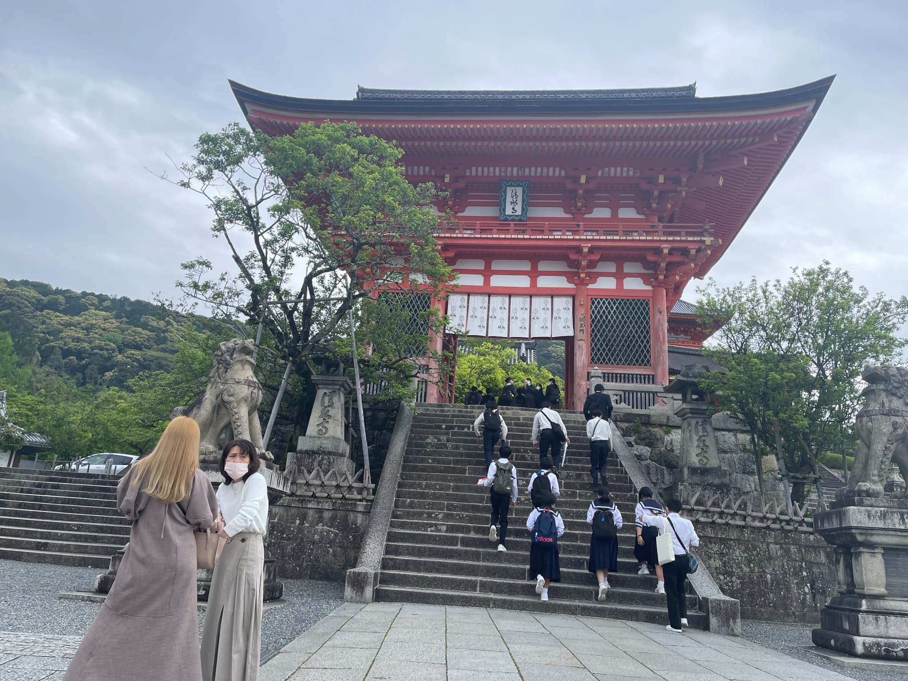
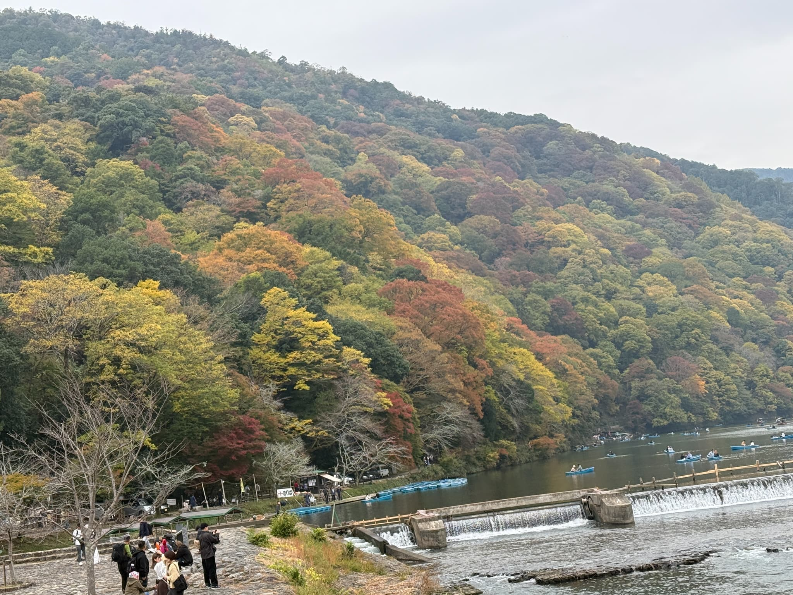
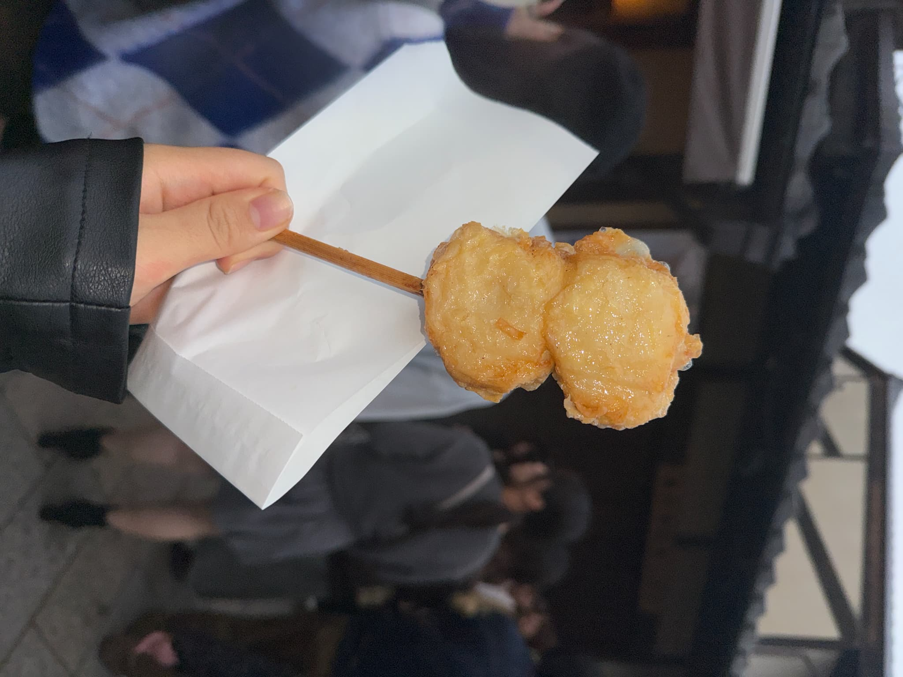
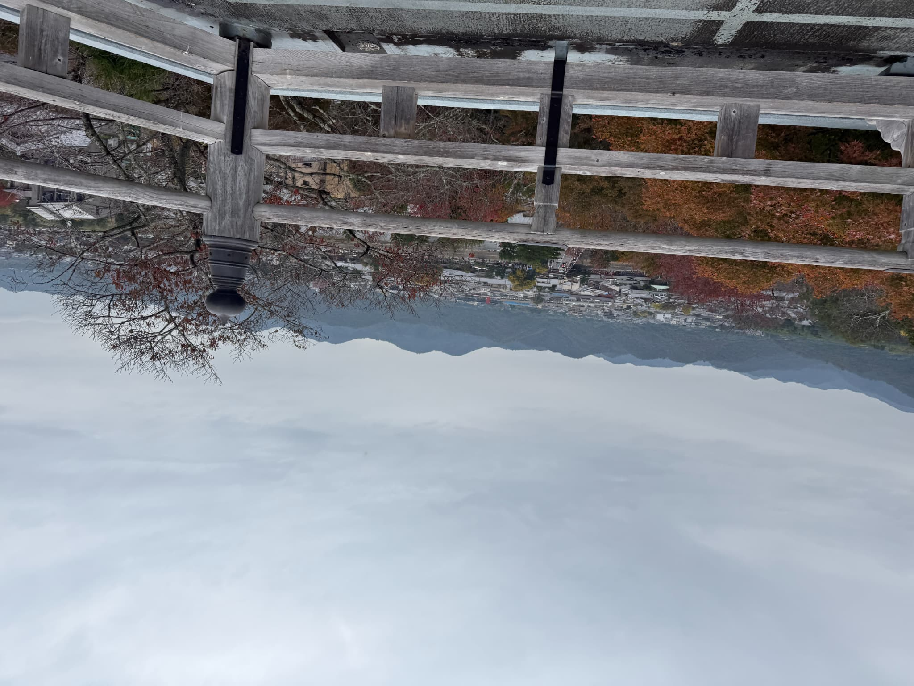
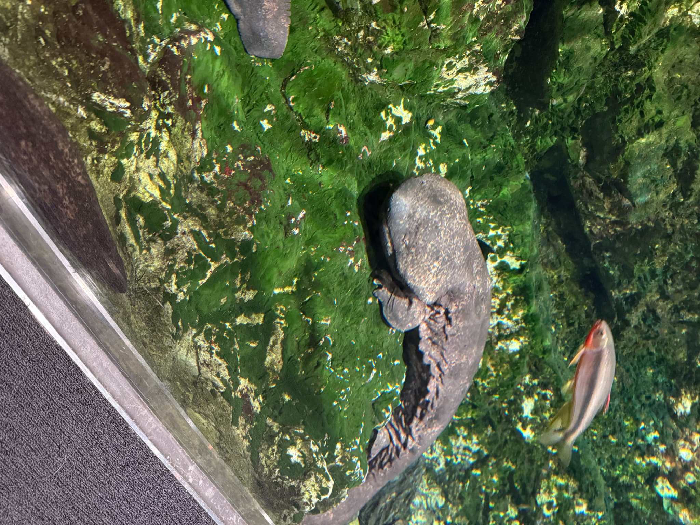
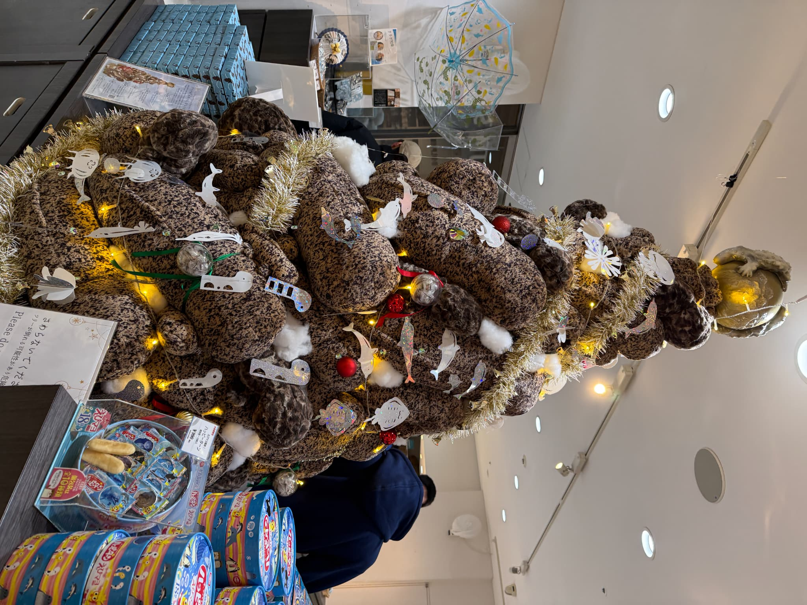

京都の名所 — 清水寺・嵐山・京都水族館
清水寺

京都を代表する観光地の一つ。舞台からの眺めが美しく、四季を通じて多くの観光客が訪れます。バスで行くことが多いですが最近はオーバーツーリズムによってバスに乗れないこともしばしば。京都の観光地に行くということなので覚悟は必要です。
基本情報
| 住所 | 京都市東山区清水1丁目294 |
|---|---|
| アクセス | 京都駅から市バスで約20分 |
嵐山

竹林の小径や渡月橋など、自然と歴史が調和する京都西部の名所です。渡月橋はすごく雅な感じがしていましたが普通に車が走っています。山側を見るととてもきれいで、川をボートに乗って探検することもできます。
嵐山の思い出

豆腐かかまぼこ的なものを挙げたやつです。

お寺からの景色。眺めが抜群。
京都水族館

オオサンショウウオやイルカに加えてペンギンなどの水族館で人気な動物が勢ぞろいです。ペンギンの関係表が一時期話題になりましたね。
ここの水族館はオオサンショウウオ推し

大きなオオサンショウウオの人形でできたツリー